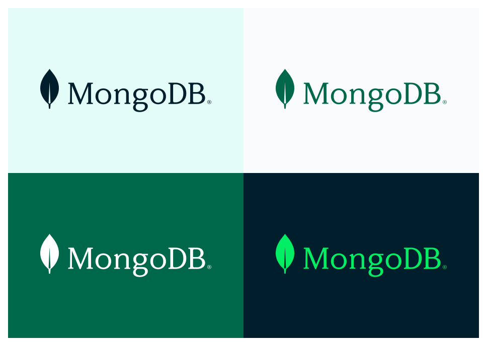

BASES DE DATOS DOCUMENTALES
¿Qué son las Bases de Datos Documentales?
Son un tipo de base de datos NoSQL que almacena datos en documentos. Como su propio nombre indica, las bases de datos orientadas a documentos utilizan documentos para el almacenamiento de todos los registros y los datos asociados a ellos. Cada uno de estos registros puede almacenar distintos tipos de datos. A su vez, los documentos que contienen los registros pueden tener diferentes formatos, desde archivos JSON o XML hasta documentos de texto.
MongoDB
MongoDB es una base de datos NoSQL de código abierto que almacena datos en documentos similares a JSON. Es una opción popular para las aplicaciones modernas que necesitan manejar grandes cantidades de datos no estructurados.
Funcionamiento:
A diferencia de las bases de datos relacionales tradicionales, que almacenan datos en tablas con un esquema fijo, MongoDB utiliza un modelo de datos orientado a documentos. Los documentos pueden contener diferentes campos y valores, y no hay un esquema predefinido para la base de datos. Esto hace que MongoDB sea muy flexible y escalable, ya que permite añadir nuevos campos y documentos a la base de datos sin necesidad de modificar la estructura existente.
Características:
-
Orientada a documentos
Los datos se almacenan en documentos similares a JSON, que son flexibles y fáciles de usar. -
NoSQL
No tiene los mismos requisitos de esquema estrictos que las bases de datos relacionales. -
Escalable
Se puede escalar fácilmente de forma horizontal para manejar volúmenes de datos crecientes. -
Nativa de la nube
Es una base de datos nativa de la nube que está bien adaptada para su implementación en la nube.
Desventajas:
-
Consistencia
No ofrece el mismo nivel de consistencia que las bases de datos relacionales, las consultas devuelvan resultados inconsistentes en algunos casos. -
Transacciones
No es compatible con las transacciones ACID, no es ideal para aplicaciones que requieren transacciones atómicas. -
Madurez
MongoDB es una tecnología relativamente nueva, no está tan bien probada como algunas bases de datos relacionales. -
Consultas complejas
Las consultas complejas pueden ser más difíciles de escribir en MongoDB que en las bases de datos relacionales.
Página Oficial de Documentación:MongoDB
Cloud Firestore

Cloud Firestore es una base de datos NoSQL alojada en la nube desarrollada por Google para su plataforma Firebase. A diferencia de MongoDB, que es una solución independiente, Firestore se integra específicamente con los servicios de Google Cloud.
Funcionamiento:
Firebase envía automáticamente eventos a las aplicaciones cuando los datos cambian, almacenando los datos nuevos en el disco. Aunque no hubiera conexión por parte de un usuario, sus datos estarían disponibles para el resto y los cambios realizados se sincronizarían una vez restablecida la conexión.
Características:
-
Base de datos NoSQL
Almacena información en documentos similares a JSON, ofreciendo flexibilidad para estructuras de datos cambiantes. -
Sincronización global/h4>
Permite sincronizar fácilmente los datos entre dispositivos móviles y aplicaciones web en tiempo real, gracias a su infraestructura global. -
Seguridad integrada
Proporciona reglas de seguridad sólidas para controlar el acceso a los datos de tu base de datos Firestore. -
SDKs multiplataforma
Ofrece SDKs para los lenguajes de programación más populares, como Java, Swift, Kotlin y JavaScript, facilitando la integración con tu aplicación.
Desventajas:
-
Limitaciones de consultas
Firestore está diseñado para consultas simples y no admite consultas complejas como las que se pueden realizar en bases de datos relacionales. -
Dependencia del proveedor
Firestore es un servicio de Google Cloud Platform, por lo que estás sujeto a las políticas y limitaciones de Google. Si decides cambiar de proveedor de nube en el futuro, podrías tener dificultades para migrar tus datos a otra plataforma. -
Costos
Las tarifas de Firestore pueden ser impredecibles, especialmente si tienes picos repentinos de tráfico. -
Paginación limitada
La paginación de resultados de consultas en Firestore puede ser un poco limitada, especialmente para grandes conjuntos de datos.